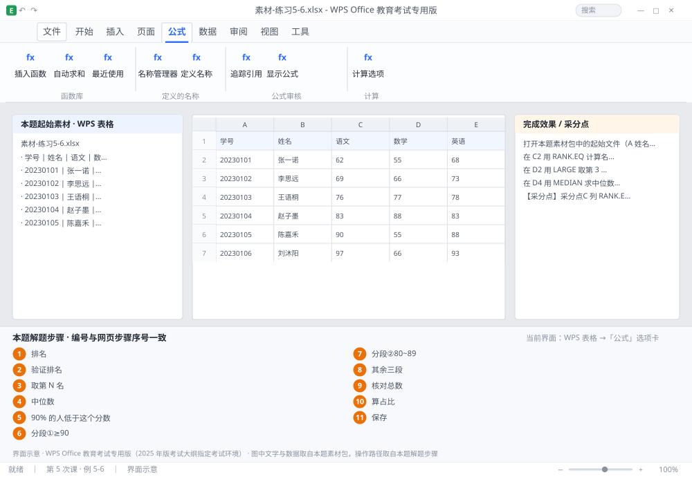

完成比对文档 · 例 5-6
排名与分段：RANK.EQ + LARGE/SMALL + MEDIAN + PERCENTILE + 五段统计 ｜ 第 5 次课 / WPS 表格 ｜ 网页：实操-表格2.html ｜ 考试环境：WPS Office 教育考试专用版（2025 年版考试大纲指定考试环境）
用途 本页按修订后的题目要求与解题步骤生成，是交卷自查的结果基准：
逐项列出每一步应出现的可复核结果，配合模拟操作截图与解题结果文件使用。
它不是素材包的一部分，不会预置答案动作；起始素材仍从本题素材包下载。
一、本题起始素材包
目录：练习素材/练习5-6-排名与统计分布/ ｜
下载包：练习素材/下载/练习5-6-排名与统计分布.zip
二、题目要求
- 打开本题素材包中的起始文件（A 姓名、B 总分，20 人）。
- 在 C2 用 RANK.EQ 计算名次（降序），下拉到 C21。
- 在 D2 用 LARGE 取第 3 名分数，在 D3 用 SMALL 取倒数第 2 名。
- 在 D4 用 MEDIAN 求中位数，D5 用 PERCENTILE 求第 90 百分位。
- 在 F2:F6 用 COUNTIFS 分段统计人数：≥90、80~89、70~79、60~69、<60。
- 在 G2:G6 计算各段人数占比（用 $F$7 总数做分母）。
- 保存为 学号-姓名-练习5-6.xlsx。
三、解题步骤（编号与下方核对表、截图编号一致）
- 排名。C2 输入 =RANK.EQ(B2,$B$2:$B$21,0) → 下拉。第三参数 0 表示降序（分数越高名次越靠前）；写 1 表示升序。
- 验证排名。最高分那行的名次应为 1；两人同分时会出现并列名次（如两个第 3），这是 RANK.EQ 的正常行为。
- 取第 N 名。D2 输入 =LARGE($B$2:$B$21,3) → 第 3 大的分数；D3 输入 =SMALL($B$2:$B$21,2) → 第 2 小的分数。
- 中位数。D4 输入 =MEDIAN($B$2:$B$21)。中位数与平均数的差，能看出分数是否偏斜。
- 百分位。D5 输入 =PERCENTILE($B$2:$B$21,0.9) → 第 90 百分位，意思是「90% 的人低于这个分数」。
- 分段①≥90。F2 输入 =COUNTIFS($B$2:$B$21,">=90")。
- 分段②80~89。F3 输入 =COUNTIFS($B$2:$B$21,">=80",$B$2:$B$21,"<=89")。区间必须首尾相接、不重叠，否则会有分数被算两次或一次不算。
- 其余三段。F4 >=70 且 <=79；F5 >=60 且 <=69；F6 <60。
- 核对总数。F7 输入 =SUM(F2:F6)，应等于 20；不等说明区间有重叠或遗漏。
- 算占比。G2 输入 =F2/$F$7 → 下拉到 G6 → 设为百分比格式 1 位小数。
- 保存。Ctrl+S。
四、完成效果 / 采分点
采分点C 列 RANK.EQ 降序且引用区域绝对 · D2/D3 LARGE 与 SMALL 的 N 值正确 · D4 MEDIAN、D5 PERCENTILE 正确 · 五段人数之和等于 20（区间不重叠） · 占比用 $F$7 绝对引用
五、逐项完成核对表
| 步骤 | 关键操作路径 | 应出现的结果（可复核） |
|---|
| 1 | 排名 | C2、B2 |
| 2 | 验证排名 | 验证排名 |
| 3 | 取第 N 名 | D2、=LARGE(、D3、=SMALL( |
| 4 | 中位数 | D4、=MEDIAN( |
| 5 | 百分位 | D5、=PERCENTILE(、「90% 的人低于这个分数」 |
| 6 | 分段①≥90 | F2、=COUNTIFS( |
| 7 | 分段②80~89 | F3、=COUNTIFS( |
| 8 | 其余三段 | F4、F5、F6 |
| 9 | 核对总数 | F7、=SUM(、F2:F6 |
| 10 | 算占比 | G2、F2、G6 |
| 11 | 保存 | 保存 |
六、模拟操作截图

界面示意 · WPS Office 教育考试专用版 · 橙色编号与本题解题步骤序号一致；
图中文字与数据取自本题素材包，功能入口取自本题解题步骤。
核对方法：按网页解题步骤完成并另存自己的成稿后，逐行比对本表第 3 列的
参数、公式、区域、文件名与对象数量；再对照网页「完成效果 / 采分点」检查版式是否一致。